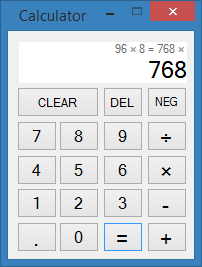

Code Design
An example of code design

In about 10 hours I began to learn the .NET Framework and produced a Windows Form calculator app.
Check out the code here.
MVC (ish)
I always design software with evolution in mind: one of my goals was to make adding new calculator types and functionality easy. I adapted the MVC design pattern to separate the code that all calculators share from the code that varies. Different calculator forms (view-controllers), such as standard or scientific, can be swapped out while the model remains the same.
Observer Pattern
The form implements 3 observer interfaces and registers itself with the calculator instance. The form observers state changes in the calculators answer, operation history and operand fields. I chose this configuration of observers to accommodate different form displays. This version has only 2 fields that display information so answers will temporarily replace the operand when updated.
partial class CalculatorForm : Form, AnswerObserver, HistoryObserver, OperandObserver
{
CalculatorInterface model;
public CalculatorForm(CalculatorInterface model)
{
...
// Register form with model
model.AnswerObserver = (AnswerObserver) this;
model.HistoryObserver = (HistoryObserver) this;
model.OperandObserver = (OperandObserver) this;
}
public void UpdateOperand()
{
// Update operand display
operandTextBox.Text = model.Operand;
}
public void UpdateHistory()
{
string history = model.History;
if (history.Length > 34)
{
history = "..." + history.Substring(history.Length - 28);
}
historyTextBox.Text = history;
}
public void UpdateAnswer()
{
// Overwrite operand display
operandTextBox.Text = model.CurrentValue;
}
...
}
The controller manipulates the model by changing the value of the operand with the PutDigit and ApplyTransformation methods. ApplyTransformation accepts objects that implements the Transformation interface. Transformations include delete, clear, and put decimal functions. New transformations can be easily created by implementing the Transformation interface and without changing the model.
Strategy Pattern
The Strategy Design pattern is used to define and change the action that the calculator will perform when the equals button is pressed. All operations implement the Operation interface and are used to perform operations between the current value and the operand fields. They are responsible for their own error handling as needed.
class AddOperation : Operation
{
public double Calculate(double operand1, double operand2)
{
return operand1 + operand2;
}
public override string ToString()
{
return "+";
}
}
The model will apply the current operation if the operand is not empty before setting the new operation and update the appropriate observers.
/* Applies the current operation and updates the calculation history.
*
* The operand is reset but only the history and answer observers are updated.
*/
public void Execute()
{
double operandValue;
bool operandConverted = double.TryParse(operand, NumberStyles.Float, CultureInfo.InvariantCulture, out operandValue);
if (operandConverted)
{
currentValue = operation.Calculate(currentValue, double.Parse(operand));
history += operation.ToString() + " " + operand + " ";
}
else
{
Console.WriteLine("Unable to convert {0}", operand);
}
InitializeOperand();
UpdateHistoryObserver();
UpdateAnswerObserver();
}
Tools & Technologies